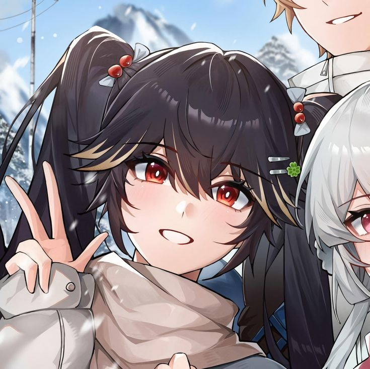

Overview
The game is set in a post-apocalyptic world where humanity is on the brink of extinction due to the outbreak of a mysterious virus known as the Punishing Virus. The virus has turned most of the machine population into hostile creatures, and the remaining humans are struggling to survive. Players take on the role of a commandant leading a team of Constructs, who are tasked with combating the corrupted.
Factions
- Babylonia
- Kowloong Metropolis
- Ascendants
- Arctic Route Union
- The Forsaken
- Church of Machina
- Akdilek Commercial Alliance
Chapter 1: About Lucia
Introduction
- Lucia is a female Construct from the game Punishing: Gray Raven.
- She belongs to the Babylonia faction.
- She is beautiful and strong.
- She is the captain of the Gray Ravens.
- Lucia has only had attacker-type frames.
Appearance

Character demo
Chapter 2: Lucia's Backstory
Lucia is an orphan from the golden era of humanity (around the year 2150). She has a sister named Luna. Lucia became a Construct at the age of 17 to protect Luna and get a place in Babylonia after the Punishing Virus outbreak. Lucia then worked and became part of the Gray Ravens.
The original Lucia was later betrayed by her commandant and left to become corrupted. She later became the Ascendant Alpha. After that, Babylonia created a copy of Lucia to fill the gap left by the original. Lucia then suffered from loneliness and depression at the academy. During selection, she was found by the new Gray Raven commandant (the player) and recruited into the team as captain, alongside Liv and Lee.
Babylonia scientist Asimov sealed the original Lucia's past memories after she was betrayed to prevent resentment and protest. Both Lucias are their own people and have vastly different personalities.
Chapter 3: Lucia's Voice
Chapter 4: In-game CG of Lucia
Chapter 5: Lucia's Evolution
Lucia has undergone several upgrades during the story. She started with her basic Lotus frame, then moved to Dawn during a crucial fight. She later took a specialized frame called the Plume model, which ended up being too heavy for her and made her lose her original memories. She had to rely on backup memories from the data of previous frames. Lucia is more expressive of her emotions in the Plume frame. Lastly, Lucia got her current frame called Pyroath, equipped with the latest technology: the Omega weapon's Omega Core, which can use the Punishing Virus as a source of energy. It was given to Lucia before the Hetero Tower exploration mission.
Current frames of Lucia
| Frame | Element | Weapon type | Affix |
|---|---|---|---|
| Lotus | Physical-Fire | Dual blades | None |
| Dawn | Physical-Electric | Dual blades | None |
| Plume | Physical-Ice | Shield Blade | None |
| Pyroath | Fire | Pyro Katana | Plasma Beam |
| All of Lucia's frames are attacker type | |||